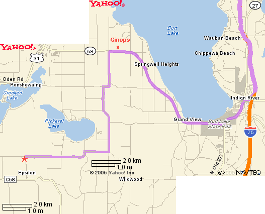

|
|
| Starting Location
Northern Michigan / Da U.P. |
Destination/Mailing
Address 460 SILVER CREEK ROAD PETOSKEY, MI 49770 |
| Directions | Distance |
| 1: Take I-75 SOUTH | 28 miles after Mac Bridge |
| 2: Take the second INDIAN RIVER exit, marked M-68, exit number 310 | 0.4 miles |
| 3: At the Stop sign, turn RIGHT onto ONAWAY RD., towards M-68 | 0.6 miles |
| 4: At the light, turn LEFT onto S STRAITS HWY, towards M-68 | 1.5 miles |
| 5: At the light, turn RIGHT onto M-68 | 0.1 miles |
| 6: Watch for Ginop Tractor Sales on the right (a field of tractors for sale), turn LEFT at MILLER ROAD (also the EMMET county line) | 2.3 miles |
| 7: Turn LEFT on BANWELL RD. | 2.3 miles |
| 8: Right on PICKEREL LAKE RD. | 3.7 miles |
| 9: At the stop sign, turn LEFT to stay on PICKEREL LAKE RD | |
| 10: You will crest a large hill, then just after you traverse MUD CREEK, turn LEFT onto Silver Creek RD. | |
| 11: Our Driveway is the first one on the right on SILVER CREEK RD, only 200 feet from PICKEREL LAKE RD. | |
|
| |
|  | |